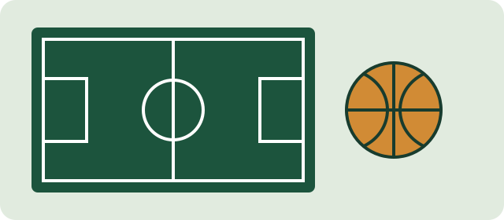

Club Social y Deportivo Los Algarrobos
Este sitio reúne información sobre las actividades deportivas y las opciones de preinscripción disponibles para quienes quieran acercarse al club.
Como presenta la consigna, la gestión de inscripciones comenzó en cuadernos y planillas. SocioClub reúne esa información para acompañar la actividad del club. Los datos de fundación y dirección exacta se publicarán cuando se cuente con información confirmada.
